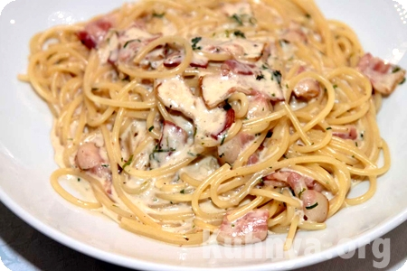

Второй рецепт: Паста Карбонара с грибами.

Ингредиенты:
- Спагетти - 200 гр
- Оливковое масло - 1 ст.л.
- Бекон - 100 гр
- Шампиньоны - 200 гр
- Сливки (15%) - 200 гр
- Пармезан - 100 гр
- Желток - 2
- Соль, перец из мельницы.
Приготовление:
- Отварить спагетти, согласно инструкции на упаковке.
- В масле обжарить мелко нарезанный бекон и грибы.
- Слегка взбить желтки, ввести сливки и сыр, перемешать. Посолить и поперчить.
- Добавить к бекону с грибами. На медленном огне быстро помешивая довести до кипения.
- Не увеличивать огонь, иначе желтки "схватятся", чего допускать нельзя.
- В отваренные и отцеженные горячие спагетти ввести соус и перемешать.
- Макароны должны быть полностью пропитаны соусом.
- Подавать лучше на подогретой тарелке. Посыпать небольшим количеством сыра.
Приятного аппетита!